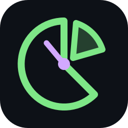
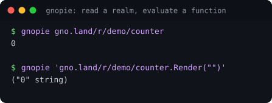
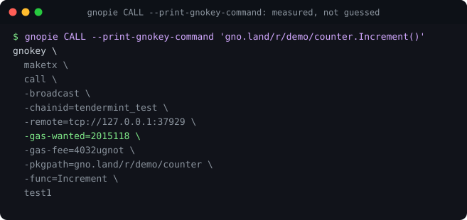
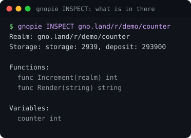
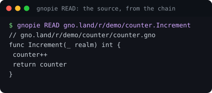
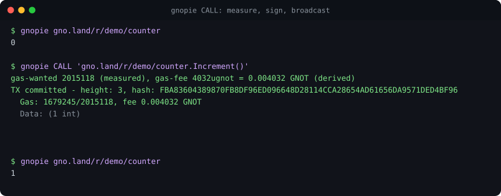

gnopie 🥧
httpie, but for gno.land. One command to read a realm, evaluate a function, or send a transaction.


go install moul.io/gnopie@latest⚠️ Read this before you point it at a chain
- Not audited. Not by anyone, ever. No security review, no third party. Much of it was written with AI assistance.
- It signs and broadcasts real transactions with real money.
CALLandRUNare irreversible. There is no undo on a chain. - It is not a gno.land project. Not endorsed by or affiliated with gno.land, the Gno core team, or any organisation. It is one person's tool.
- It is pinned to one gno version and has broken more than once when the VM moved underneath it. A newer chain can make it silently wrong, not merely broken.
Use --dry-run and -print so you never have to take
its word for a transaction. Do not use it for anything you cannot afford to
lose. If you want a supported tool, use
gnokey.
The number you cannot look up
Composing a gnokey maketx by hand means knowing five things: the
RPC endpoint, the chain ID, the function signature, the argument types, and the gas.
Four of those you can look up. The gas you cannot, because gno prices a
transaction on what the code does. The same send costs
1,238,665 when it has to create the recipient's account and a fraction
of that when the account exists, and nothing in the command says which case you are in.
So everyone guesses, and the guess is wrong:
gas used (11674483) exceeds tx's gas wanted (2000000)gnopie simulates first and broadcasts the measured number. There is no gas flag to get wrong.

The fee is a ratio, which is the half everyone misses
The fee is not a flat amount you pick. The ante handler compares a ratio:
gas_fee / gas_wanted >= block gas priceTwo things follow, and they pull in opposite directions.
A flat fee bounces
as the transaction gets bigger, because gas_wanted grows with what the code
does and a constant cannot track it.
A flat fee burns money
if it is big enough never to bounce. gas_wanted is a ceiling and is
refunded. The fee is transferred in full and never returned.
gnopie itself used to default to -gas-fee=1000000ugnot, a flat 1 GNOT. A measured
counter.Increment() needs 4,032 ugnot. That default was
overpaying by 248x on every transaction, while still being one large
call away from bouncing. Both numbers are derived from the same measurement now.

-print is the one to reach for when you do not trust it: the gnokey
invocation, measured gas and derived fee and all, broadcasting nothing.Verbs
Inspired by httpie: the verb says what kind of thing you are doing.
| Verb | What it does |
|---|---|
| GET (default) | Render for a realm, EVAL for a call expression, READ for a symbol, INSPECT for a domain |
| EVAL | evaluate a read-only function call |
| READ | source of a function, a file, or the value of a variable |
| INSPECT | a network, a realm, or a symbol, in detail |
| CALL | sign and broadcast a MsgCall |
| RUN | generate a script and broadcast a MsgRun |


What it does for you
Auto-discovery
Reads <meta name="gnoconnect:rpc"> off the domain's gnoweb page. No
endpoint to configure, no chain ID to remember.
Auto-gas, auto-fee
CALL and RUN simulate, then broadcast with the measured gas plus a buffer and a fee sized from it. The feature the whole tool is worth having for.
Crossing functions
Detected from the signature rather than assumed, so a realm function that needs a
cur realm gets one.
Paste a gnoweb URL
The scheme, the :p/render-path, $source, $help and
#func-Name fragments are all understood.
Seeing before signing
gnopie CALL --dry-run 'gno.land/r/demo/counter.Increment()'
gnopie CALL -print 'gno.land/r/demo/counter.Increment()'
gnopie --json gno.land/r/gnoland/blog | jq .result
gnopie --debug gno.land/r/gnoland/blogIt will never print a number it did not measure. It used to print a hardcoded
10000000 on both signing paths, which is the one thing this tool exists to stop: the
same call measured 11,732,203 against mainnet, so a command copied out
of gnopie failed exactly the way a hand-written one does.
Measuring needs a signature, so it needs a key. Without one, both gas flags are left out and the reason is printed beside them, rather than a plausible number being invented to fill the gap.

Configuration
| Key | Default | What it does |
|---|---|---|
key | none | the gnokey key that signs |
gas-buffer | 20 | percent added to the measured gas. Free: the ceiling is refunded |
fee-margin | 200 | percent of the ante handler's floor. Not free: the fee is spent |
gnopie config set key=alice
gnopie config listVersion pinning, and why it matters
gnopie links gno as a library, so it is pinned to one version in
go.mod and the chain it talks to may be newer. gnopie version prints
both.
This is not hypothetical, and it has bitten three times. The MsgRun generator emitted
func main() and a bare cross, correct when written and rejected once the
VM moved to func main(cur realm) and cross(cur). EVAL prepended a bare
cross the VM no longer accepts, when the chain had been injecting it itself all
along. INSPECT matched the realm interface by a literal prefix string that the VM had since
changed. Each failed silently rather than loudly.
When gno cuts a release, bump the pin and run the suite. That is the maintenance this tool costs.
Install
go install moul.io/gnopie@latestor take a binary, on a machine with no Go at all:
curl -sSfL https://github.com/moul/gnopie/releases/latest/download/gnopie_linux_x86_64.tar.gz \
| tar -xz gnopie && sudo mv gnopie /usr/local/bin/Then point it at your gnokey key:
gnopie config set key=<your key name>gnopie reads the gnokey keybase at $GNOHOME. It never creates, stores or
transmits keys of its own.
Please break it
Point it at a realm you know and check the source it prints. Run -print on a call
you were about to make by hand, and compare the gas to whatever you were about to type.
If it hands you a number that turns out wrong, that is the bug I most want to hear about, because it is the only one that costs you money. Open an issue. Anything with a safety angle goes to a private advisory instead.